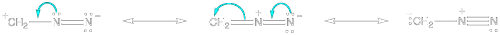
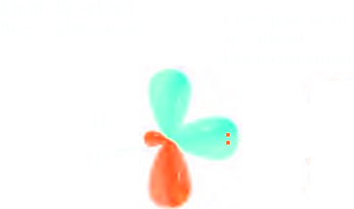
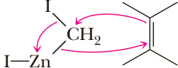
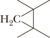

Carbenes and Carbenoids
A carbene, R2C:, is a neutral molecule in which a carbon atom is surrounded by only six valence electrons. Because they are electron-deficient, carbenes are highly reactive and behave as electrophiles. As we will see, one of their most important types of reactions is with alkenes (nucleophiles) to give cyclopropanes.
Methylene
The simplest carbene is methylene, CH2, prepared by photolysis (cleavage by light) or thermolysis (cleavage on heating) of diazomethane, CH2N2, an explosive, toxic gas
|  | hν ⟶ | H2C: | + | :N≡N: |
| Diazomethane | (Methylene) (the simplest carbene) |
In the lowest electronic state of most carbenes, carbon is sp2 hybridized with the unshared pair of electrons occupying the third sp2 orbital. The unhybridized 2p orbital lies perpendicular to the plane created by the three sp2 orbitals. Note that this orbital description of methylene is very much like that of a carbocation (Section 6.3A). In both species, carbon is sp2 hybridized with a vacant 2p orbital. Methylene in this electronic state combines features of a carbocation and a carbanion in that it has both a vacant p orbital and a lone pair.
Methylene generated in this manner reacts with all C—H and C=C bonds and is so nonselective that it is of little synthetic use.
Dichlorocarbene
Although we often think of chlorine atoms as electron-withdrawing substituents, dichlorocarbene is much more stable and chemoselective than free methylene because resonance with the lone pairs on chlorine partially satisfies the electron deficiency on carbon.
Dichlorocarbene can be prepared by treating chloroform with potassium tert-butoxide, removing the elements of HCl. The resulting carbene reacts cleanly with alkenes to give dichlorocyclopropanes. Addition of a dihalocarbene to an alkene shows syn stereoselectivity.
| CHCl3 | + (CH3)3CO−K+ | ⟶ | Cl2C: | + (CH3)3COH | + K+Cl− |
| Trichloromethane (Chloroform) | Potassium tert-butoxide | Dichlorocarbene | tert-Butyl alcohol |
| Cl2C: + |  | ⟶ | A dichlorocyclopropane |
Reaction of a cis alkene with a dihalocarbene gives only a cis dihalocyclopropane as illustrated by the reaction of cis-3-hexene with dichlorocarbene. Similarly, reaction of a trans alkene gives only a trans dihalocyclopropane.
-3-Hexene.png) | + CHCl3 | (CH3)3CO−K+ ⟶ |
Mechanism Formation of Dichlorocarbene and Its Reaction with Cyclohexene
Taken together, Steps 1 and 2 result in α-elimination of H and Cl; that is, both atoms are eliminated from the same carbon. We have seen many examples of β-elimination, where hydrogen and a leaving group are eliminated from neighboring carbons. There are very few examples of a-elimination, and they are possible only where no β-hydrogen exists.
Step 1: Take a proton away. Treatment of chloroform, which is somewhat acidic because of its three electron-withdrawing chlorine atoms, with potassium tert-butoxide gives the trichloromethide anion.
(CH3)3CO− + HCCl3 ⇌ (CH3)3COH + −CCl3 (Trichloromethide anion)
Step 2: Break a bond to give stable molecules or ions. Loos of Cl− from CCl3− gives dichlorocarbene
−CCl3 ⟶ :CCl2 (Dichlorocarbene) + Cl−
Step 3: Make a bond between a nucleophile (π bond) and an electrophile. Syn addition of dichlorocarbene to cyclohexene gives a dichlorocyclopropane. Compare this step to the electrophilic addition of bromine and chlorine to an alkene first discussed in Section 6.3D.
⟶
A dichlorocyclopropane
The Simmons-Smith Reaction
Although methylene prepared from diazomethane itself is not synthetically useful, addition of methylene to an alkene can be accomplished using a reaction first reported by the American chemists Howard Simmons and Ronald Smith. The Simmons-Smith reaction uses diiodomethane and zinc dust activated by a small amount of copper (a so-called “zinc-copper couple”) to produce iodomethylzinc iodide, in a reaction reminiscent of a Grignard reaction. Even though we show the Simmons-Smith reagent here as ICH2ZnI, its structure is considerably more complex and not fully understood.
| CH2I2 | + Zn(Cu) | ⟶ diethyl ether | ICH2ZnI |
| Diiodomethane | Zinc-copper | Iodomethylzinc iodide (Simmons-Smith reagent) |
This organozinc compound reacts with a wide variety of alkenes to give cyclopropanes.
 | + CH2I2 | + Zn(Cu) ⟶ diethyl ether | + ZnI2 | |
| Methylenecyclopentane | Spiro[4.2]heptane |
 Cyclohexenone | + | CH2I2 | + | Zn(Cu) ⟶ diethyl ether |

(1S,6R)-Bicyclo[4.1.0]heptan-2-one | + |
(1R,6S)-Bicyclo[4.1.0]heptan-2-one | + | + | ZnI2 |
Mechanism The Simmons-Smith Reaction with an Alkene
Although an α-elimination from the Simmons-Smith reagent to give methylene would in principle be possible, the reagent is much more selective than free methylene. Instead, the organozinc compound reacts directly with the alkene by a concerted mechanism to give the cyclopropane-containing product. The Simmons-Smith reagent is an example of a carbenoid, a compound that delivers the elements of a carbene without actually producing a free carbene.
|  | ⟶ |  | + ZnI2 |